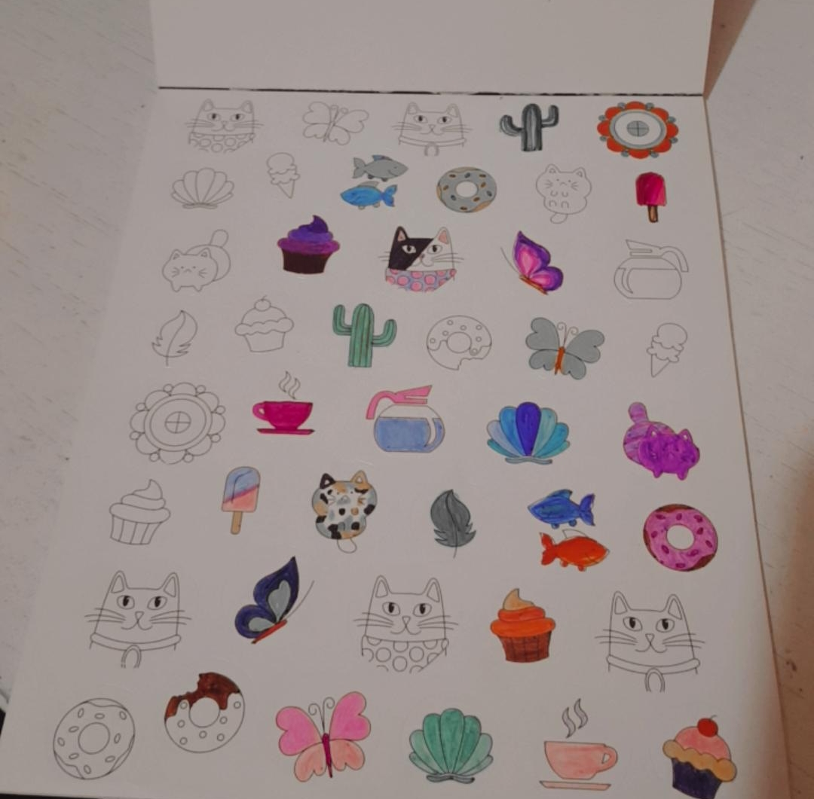

Me gusta hacer stickers. Soy una persona a la cual le gusta realizar algunas manualidades, manualidades que no requieren de muchos materiales sino simplemente materiales que se tienen en casa. Considero que en un futuro puede ser un emprendimiento ya que es una manera muy fácil de hacer algo que está en tendencia de nuevo ya que existen muchas maneras de hacer stickers de forma sin ninguna maquina, simplemente manual.
No me considero una persona lectora porque en toda mi vida no había leído tanto pero sí me ha gustado leer, el problema es que sí había sentido el impulso de hacer pero la pereza me ganaba y cuando lo lograba luego no quería parar de leer. Además, de que me gusta leer de todo pero como a todos, siempre hay un libro o una lectura que n os atrapa y en estos momentos me han atrapado 10 historias y 2 libros pero el principal es este.
Para distraerme en algo más que redes sociales me gusta mucho colorear porque siento que el que se robe toda mi atención y estar concentrada al 100% en colorear, me ayuda a relajarme. Diría que colorear para mí es como terapéutico para un mal día o simplemente para alejarse de todo y concentrarse en algo que a la vez llena de relajación.
